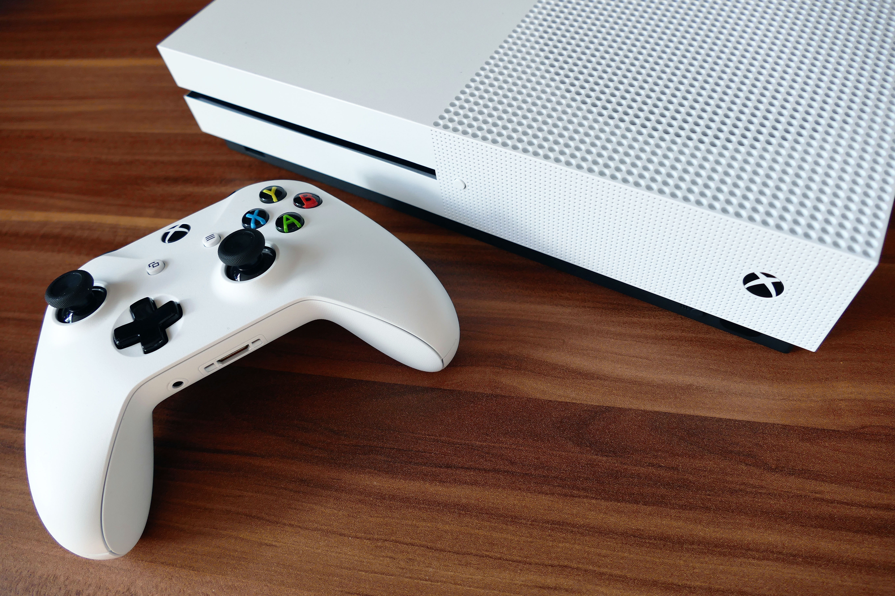
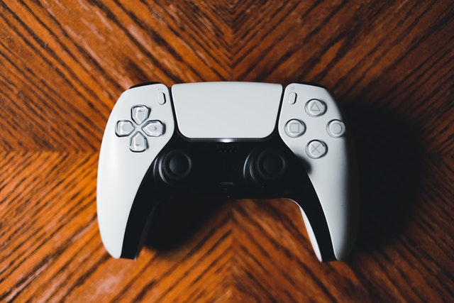
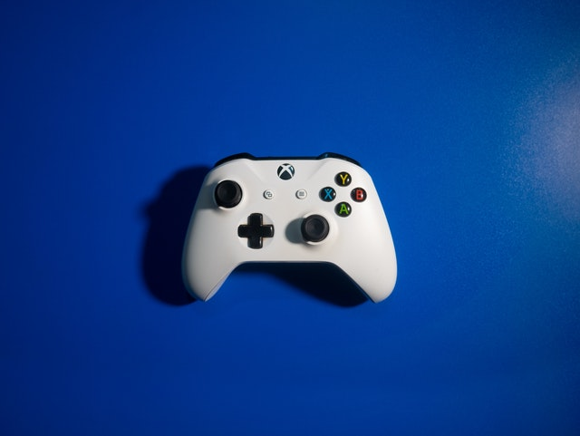

Playstation 5
Destaque

Carregamento rápido via SSD de alta velocidade, uma imersão mais profunda com suporte a feedback tátil, gatilhos adaptáveis e áudio 3D. Capacidade de armazenamento de 825GB.
Ver Consoles
-

Experimente excelentes jogos em um console menor. Não se engane com o tamanho: com uma fonte de alimentação interna e grande capacidade de armazenamento interno, o Xbox One S é um Xbox avançado.
Ver mais -

O controle DualSense oferece resposta tátil, gatilhos adaptáveis e um microfone embutido, tudo em um design icônico e confortável. Possui microfone integrado, que pode ser silenciado a qualquer momento.
Ver mais -

Experimente o design modernizado do Controle Sem Fio Xbox, com superfícies esculpidas e geometria refinada para melhorar o conforto durante os jogos. Permaneça no alvo com o gatilho texturizado e botões direcionais híbridos.
Ver mais